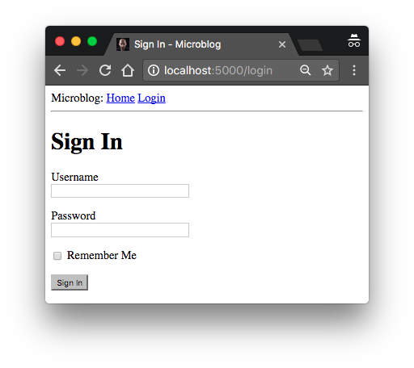
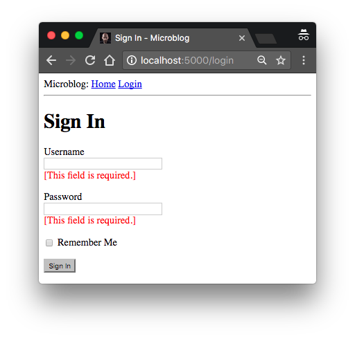

Flask官方中文文档
此文章摘自github,luhuisicnu
本文翻译自The Flask Mega-Tutorial Part I: Hello, World!
这是Flask Mega-Tutorial系列的第三部分，我将告诉你如何使用Web表单。
在第二章中我为应用主页创建了一个简单的模板，并使用诸如用户和用户动态的模拟对象。在本章中，我将解决这个应用程序中仍然存在的众多遗漏之一，那就是如何通过Web表单接受用户的输入。
Web表单是所有Web应用程序中最基本的组成部分之一。 我将使用表单来为用户发表动态和登录认证提供途径。
在继续阅读本章之前，确保你的microblog应用程序状态和上一章完结时一致，并且运行时不会报任何错误。
本章的GitHub链接为：Browse, Zip, Diff.
Flask-WTF简介
我将使用Flask-WTF插件来处理本应用中的Web表单，它对WTForms进行了浅层次的封装以便和Flask完美结合。这是本应用引入的第一个Flask插件，但绝不是最后一个。插件是Flask生态中的举足轻重的一部分，Flask故意设计为只包含核心功能以保持代码的整洁，并暴露接口以对接解决不同问题的插件。
Flask插件都是常规的Python三方包，可以使用pip安装。 那就继续在你的虚拟环境中安装Flask-WTF吧：
1 | (venv) $ pip install flask-wtf |
配置
到目前为止，这个应用程序都非常简单，因此我不需要考虑它的配置。 但是，除了最简单的应用，你会发现Flask（也可能是Flask插件）为使用者提供了一些可自由配置的选项。你需要决定传入什么样的配置变量列表到框架中。
有几种途径来为应用指定配置选项。最基本的解决方案是使用app.config对象，它是一个类似字典的对象，可以将配置以键值的方式存储其中。例如，你可以这样做：
1 | app = Flask(__name__) |
上面的代码虽然可以为应用创建配置，但是我有松耦合的癖好。因此，我不会让配置和应用代码处于同一个部分，而是使用稍微复杂点的结构，将配置保存到一个单独的文件中。
使用类来存储配置变量，才是我真正的风格。我会将这个配置类存储到单独的Python模块，以保持良好的组织结构。下面就让你见识一下这个存储在顶级目录下，名为config.py的模块的配置类吧：
1 | import os |
简单的不像话，有没有？ 配置设置被定义为Config类中的属性。 一旦应用程序需要更多配置选项，直接依样画葫芦，附加到这个类上即可，稍后如果我发现需要多个配置集，则可以创建它的子类。现在则不用操心。
SECRET_KEY是我添加的唯一配置选项，对大多数Flask应用来说，它都是极其重要的。Flask及其一些扩展使用密钥的值作为加密密钥，用于生成签名或令牌。Flask-WTF插件使用它来保护网页表单免受名为Cross-Site Request Forgery或CSRF（发音为“seasurf”）的恶意攻击。顾名思义，密钥应该是隐密的，因为由它产生的令牌和签名的加密强度保证，取决于除了可信维护者之外，没有任何人能够获得它。
密钥被定义成由or运算符连接两个项的表达式。第一个项查找环境变量SECRET_KEY的值，第二个项是一个硬编码的字符串。这种首先检查环境变量中是否存在这个配置，找不到的情况下就使用硬编码字符串的配置变量的模式你将会反复看到。在开发阶段，安全性要求较低，因此可以直接使用硬编码字符串。但是，当应用部署到生产服务器上的时候，我将设置一个独一无二且难以揣摩的环境变量，这样，服务器就拥有了一个别人未知的安全密钥了。
拥有了这样一份配置文件，我还需要通知Flask读取并使用它。可以在生成Flask应用之后，利用app.config.from_object()方法来完成这个操作：
1 | from flask import Flask |
导入Config类的方式，乍一看可能会让人感到困惑，不过如果你注意到从flask包导入Flask类的过程，就会发现这其实是类似的操作。 显而易见，小写的“config”是Python模块config.py的名字，另一个含有大写“C”的是类。
正如我上面提到的，可以使用app.config中的字典语法来访问配置项。 在下面的Python交互式会话中，你可以看到密钥的值：
1 | from microblog import app |
用户登录表单
Flask-WTF插件使用Python类来表示Web表单。表单类只需将表单的字段定义为类属性即可。
为了再次践行我的松耦合原则，我会将表单类单独存储到名为app/forms.py的模块中。就让我们来定义用户登录表单来做一个开始吧，它会要求用户输入username和password，并提供一个“remember me”的复选框和提交按钮：
1 | from flask_wtf import FlaskForm |
大多数Flask插件使用flask_ <name>命名约定来导入，Flask-WTF的所有内容都在flask_wtf包中。在本例中，app/forms.py模块的顶部从flask_wtf导入了名为FlaskForm的基类。
由于Flask-WTF插件本身不提供字段类型，因此我直接从WTForms包中导入了四个表示表单字段的类。每个字段类都接受一个描述或别名作为第一个参数，并生成一个实例来作为LoginForm的类属性。
你在一些字段中看到的可选参数validators用于验证输入字段是否符合预期。DataRequired验证器仅验证字段输入是否为空。更多的验证器将会在未来的表单中接触到。
表单模板
下一步是将表单添加到HTML模板以便渲染到网页上。 令人高兴的是在LoginForm类中定义的字段支持自渲染为HTML元素，所以这个任务相当简单。 我将把登录模板存储在文件*app/templates/login.html *中，代码如下：
1 | {% extends "base.html" %} |
一如第二章，在这个模板中我再次使用了extends来继承base.html基础模板。事实上，我将会对所有的模板继承基础模板，以保持顶部导航栏风格统一。
这个模板需要一个form参数的传入到渲染模板的函数中，form来自于LoginForm类的实例化，不过我现在还没有编写它。
HTML<form>元素被用作Web表单的容器。 表单的action属性告诉浏览器在提交用户在表单中输入的信息时应该请求的URL。 当action设置为空字符串时，表单将被提交给当前地址栏中的URL，即当前页面。 method属性指定了将表单提交给服务器时应该使用的HTTP请求方法。 默认情况下是用GET请求发送，但几乎在所有情况下，使用POST请求会提供更好的用户体验，因为这种类型的请求可以在请求的主体中提交表单数据， GET请求将表单字段添加到URL，会使浏览器地址栏变得混乱。
form.hidden_tag()模板参数生成了一个隐藏字段，其中包含一个用于保护表单免受CSRF攻击的token。 对于保护表单，你需要做的所有事情就是在模板中包括这个隐藏的字段，并在Flask配置中定义SECRET_KEY变量，Flask-WTF会完成剩下的工作。
如果你以前编写过HTML Web表单，那么你会发现一个奇怪的现象——在此模板中没有HTML表单元素，这是因为表单的字段对象的在渲染时会自动转化为HTML元素。 我只需在需要字段标签的地方加上{{ form.，需要这个字段的地方加上{{ form.。 对于需要附加HTML属性的字段，可以作为关键字参数传递到函数中。 此模板中的username和password字段将size作为参数，将其作为属性添加到<input> HTML元素中。 你也可以通过这种手段为表单字段设置class和id属性。
表单视图
完成这个表单的最后一步就是编写一个新的视图函数来渲染上面创建的模板。
函数的逻辑只需创建一个form实例，并将其传入渲染模板的函数中即可，然后用/login URL来关联它。这个视图函数也存储到app/routes.py模块中，代码如下：
1 | from flask import render_template |
我从forms.py导入LoginForm类，并生成了一个实例传入模板。form=form的语法看起来奇怪，这是Python函数或方法传入关键字参数的方式，左边的form代表在模板中引用的变量名称，右边则是传入的form实例。这就是获取表单字段渲染结果的所有代码了。
在基础模板templates/base.html的导航栏上添加登录的链接，以便访问：
1 | <div> |
此时，你可以验证结果了。运行该应用，在浏览器的地址栏中输入http://localhost:5000/，然后点击顶部导航栏中的“Login”链接来查看新的登录表单。 是不是非常炫酷？

接收表单数据
点击提交按钮，浏览器将显示“Method Not Allowed”错误。为什么呢？ 这是因为之前的登录视图功能到目前为止只完成了一半的工作。 它可以在网页上显示表单，但没有逻辑来处理用户提交的数据。Flask-WTF可以轻松完成这部分工作， 以下是视图函数的更新版本，它接受和验证用户提交的数据：
1 | from flask import render_template, flash, redirect |
这个版本中的第一个新东西是路由装饰器中的methods参数。 它告诉Flask这个视图函数接受GET和POST请求，并覆盖了默认的GET。 HTTP协议规定对GET请求需要返回信息给客户端（本例中是浏览器）。 本应用的所有GET请求都是如此。 当浏览器向服务器提交表单数据时，通常会使用POST请求（实际上用GET请求也可以，但这不是推荐的做法）。之前的“Method Not Allowed”错误正是由于视图函数还未配置允许POST请求。 通过传入methods参数，你就能告诉Flask哪些请求方法可以被接受。
form.validate_on_submit()实例方法会执行form校验的工作。当浏览器发起GET请求的时候，它返回False，这样视图函数就会跳过if块中的代码，直接转到视图函数的最后一句来渲染模板。
当用户在浏览器点击提交按钮后，浏览器会发送POST请求。form.validate_on_submit()就会获取到所有的数据，运行字段各自的验证器，全部通过之后就会返回True，这表示数据有效。不过，一旦有任意一个字段未通过验证，这个实例方法就会返回False，引发类似GET请求那样的表单的渲染并返回给用户。稍后我会在添加代码以实现在验证失败的时候显示一条错误消息。
当form.validate_on_submit()返回True时，登录视图函数调用从Flask导入的两个新函数。 flash()函数是向用户显示消息的有效途径。 许多应用使用这个技术来让用户知道某个动作是否成功。我将使用这种机制作为临时解决方案，因为我没有基础架构来真正地登录用户。 显示一条消息来确认应用已经收到登录认证凭据，我认为对当前来说已经足够了。
登录视图函数中使用的第二个新函数是redirect()。这个函数指引浏览器自动重定向到它的参数所关联的URL。当前视图函数使用它将用户重定向到应用的主页。
当你调用flash()函数后，Flask会存储这个消息，但是却不会奇迹般地直接出现在页面上。模板需要将消息渲染到基础模板中，才能让所有派生出来的模板都能显示出来。更新后的基础模板代码如下：
1 | <html> |
此处我用了with结构在当前模板的上下文中来将get_flashed_messages()的结果赋值给变量messages。get_flashed_messages()是Flask中的一个函数，它返回用flash()注册过的消息列表。接下来的条件结构用来检查变量messages是否包含元素，如果有，则在<ul>元素中，为每条消息用<li>元素来包裹渲染。这种渲染的样式结果看起来不会美观，之后会有主题讲到Web应用的样式。
闪现消息的一个有趣的属性是，一旦通过get_flashed_messages函数请求了一次，它们就会从消息列表中移除，所以在调用flash()函数后它们只会出现一次。
时机成熟，再次测试表单吧，将username和password字段留空并点击提交按钮来观察DataRequired验证器是如何中断提交处理流程的。
完善字段验证
表单字段的验证器可防止无效数据被接收到应用中。 应用处理无效表单输入的方式是重新显示表单，以便用户进行更正。
如果你尝试过提交无效的数据，相信你会注意到，虽然验证机制查无遗漏，却没有给出表单错误的具体线索。下一个任务是通过在验证失败的每个字段旁边添加有意义的错误消息来改善用户体验。
实际上，表单验证器已经生成了这些描述性错误消息，所缺少的不过是模板中的一些额外的逻辑来渲染它们。
这是给username和password字段添加了验证描述性错误消息渲染逻辑之后的登录模板：
1 | {% extends "base.html" %} |
我做的唯一的改变是，在username和password字段之后添加for循环以便用红色字体来渲染验证器添加的错误信息。通常情况下，拥有验证器的字段都会用form.<field_name>.errors来渲染错误信息。 一个字段的验证错误信息结果是一个列表，因为字段可以附加多个验证器，并且多个验证器都可能会提供错误消息以显示给用户。
如果你尝试在未填写username和password字段的情况下提交表单，就可以看到显眼的红色错误信息了。

生成链接
现在的登录表单已经相当完整了，但在结束本章之前，我想讨论在模板和重定向中包含链接的妥当方法。 到目前为止，你已经看到了一些定义链接的例子。 例如，这是当前基础模板中的导航栏代码：
1 | <div> |
登录视图函数同样定义了一个传入到redirect()函数作为参数的链接：
1 |
|
直接在模板和源文件中硬编码链接存在隐患，如果有一天你决定重新组织链接，那么你将不得不在整个应用中搜索并替换这些链接。
为了更好地管理这些链接，Flask提供了一个名为url_for()的函数，它使用URL到视图函数的内部映射关系来生成URL。 例如，url_for('login')返回/login，url_for('index')返回/index。 url_for()的参数是endpoint名称，也就是视图函数的名字。
你可能会问，为什么使用函数名称而不是URL？ 事实是，URL比起视图函数名称变更的可能性更高。 稍后你会了解到的第二个原因是，一些URL中包含动态组件，手动生成这些URL需要连接多个元素，枯燥乏味且容易出错。 url_for()生成这种复杂的URL就方便许多。
因此，从现在起，一旦我需要生成应用链接，我就会使用url_for()。基础模板中的导航栏部分代码变更如下：
1 | <div> |
login()视图函数也做了相应变更：
1 | from flask import render_template, flash, redirect, url_for |